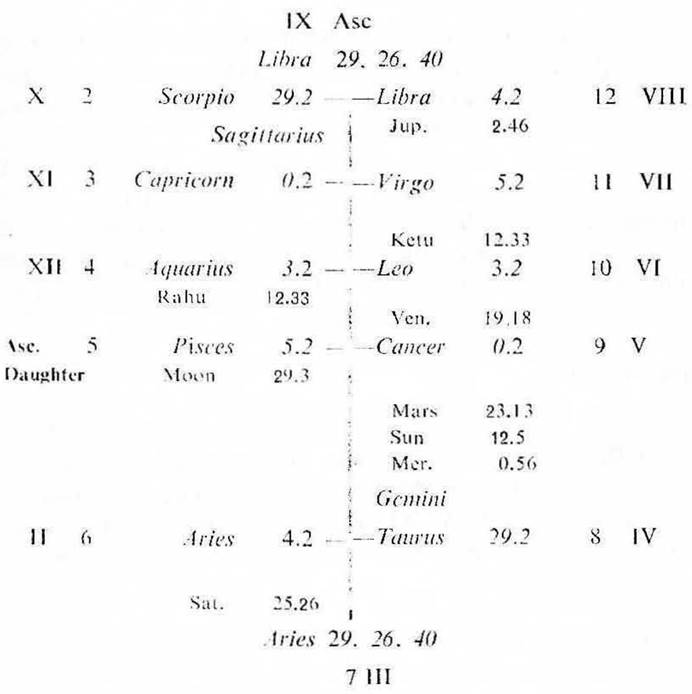
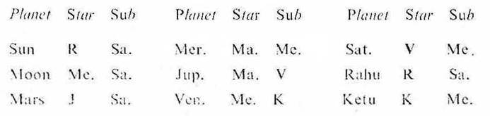
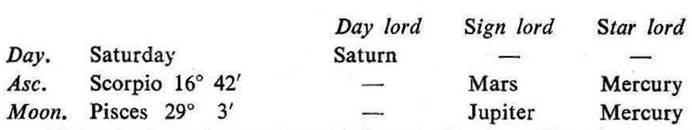
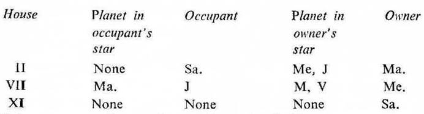

Question. When will my daughter get married?
Number. 145 (out of 249)
Place of Judgment. 23°N 2', 72°E 35'
Time of Judgment 27-6-1970, Saturday; 5-30 P.M. I.S.T.


If the cuspal sub lord of the 7th be the significator of 2, 7 or 11 marriage takes place during the joint period of the significators of 2, 7 and 11.
In this horary map the father put the query about the marriage of his daughter. So consider the 5th house as the Asc. for the daughter and proceed. For convenience the roman letter is given to each house counted from the 5th cusp.
Moon occupies the Asc. of the daughter. It is in the star Mercury owning VII and in the sub Saturn owning XI and occupying II. So it is the significator of VII (marriage of the daughter) and connected with II (family life) and XI (permanent relationship). Thus Moon clearly indicates that the query refers to the marriage of the querent’s daughter.
Cusp VII. The sub lord of VII cusp is Saturn. It owns XI and occupies II. It is in the star Venus (the natural significator of marriage) and in the sub Mercury owning VII. So Saturn is connected with II, VII and XI. The cuspal sub lord Saturn and its star lord Venus both are direct in motion. Hence the querent’s daughter will get married

Rahu in Aquarius represents Saturn. So the ruling planets are Mars, Mercury, Jupiter, Saturn and Rahu. None of them is in the star or sub of a retrograde planet.

Rahu represents Saturn. So take it as the significator.
The common planets between the ruling planets and the significators are Mars, Mercury, Jupiter, Saturn and Rahu.
At the time of judgment (Mercury Dasha balance 1Y 2M 16D) the querent’s daughter is running the joint period of Mercury and Saturn. They are among the significators. Now we have to select the inter period ruler out of the remaining significators Mars, Jupiter and Rahu. Rahu being stronger than any significator should be considered as the inter period ruler.
Thus we have to consider the joint period of Mercury, Saturn and Rahu which starts from 8-12-1970 and lasts upto 3-5-1971.
Mercury owns VII, Saturn is the cuspal sub lord of VII and Rahu is the cuspal sub lord of XI. So the querent’s daughter will get married during their joint period when the transit agrees.
During the time from 8-12-1970 to 3-5-1971 Sun will first transit in the star of Rahu from 19-2-1971. So the marriage will take place in the month of February 1971.
Actually the querent’s daughter got married on 19-2-1971, when Sun was transitting in Aquarius 6° 50' in the star Rahu (the inter period ruler); Moon in Scorpio 18° 0' in the star Mercury (the period ruler); Mercury in Capricorn 24° 58' in the sub Rahu; Saturn in Aries 23° 19' in its own sub Saturn (the sub period ruler); and Rahu in Capricorn 29° 59' in the sub Saturn.